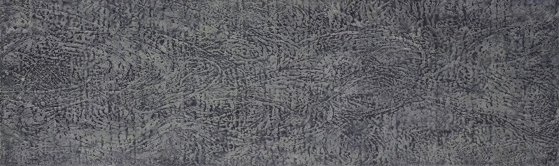
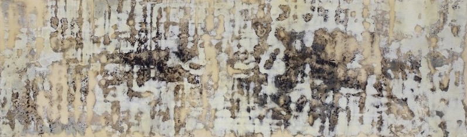
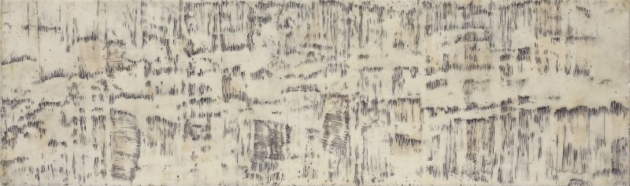
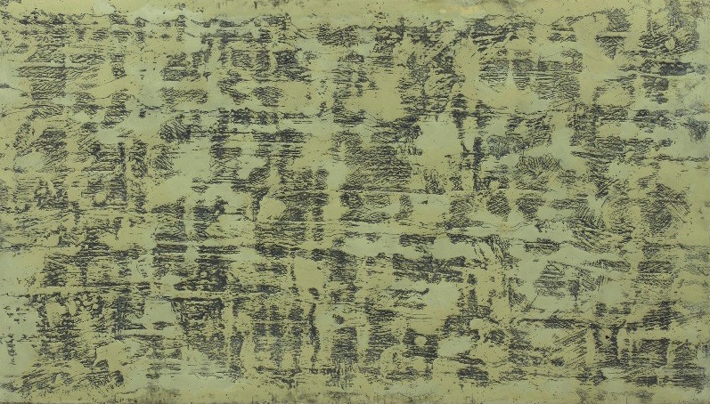
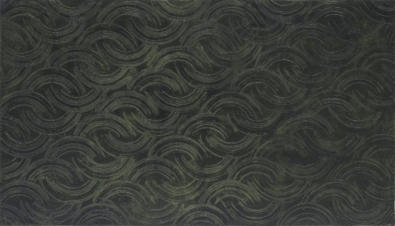
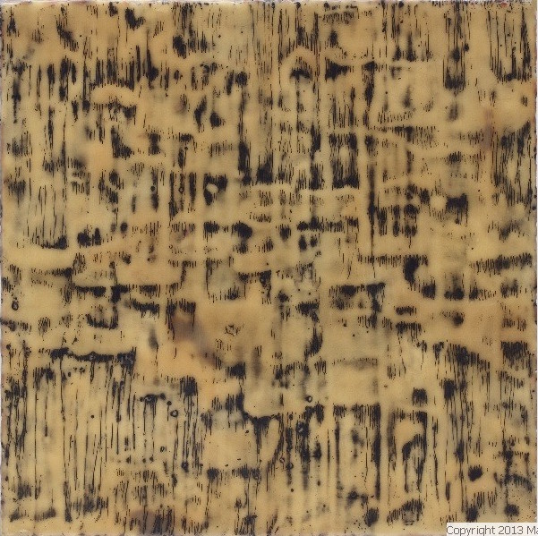
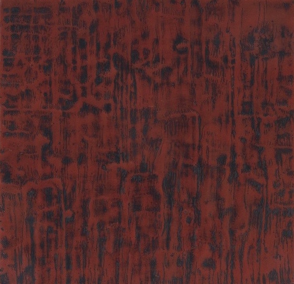

Mari Marks
Works
Recent work
2012-13 Series
2010-11 Series
2007-09 Series
2005-06 Series
About
Resume
Artist's Statement
Mari Marks: a Reflection
Contact
Series 2012-13

On the Road to Kamakura, the Fourth Day | Beeswax, pigment, graphite on panel | 15” x 50”

On the Road to Kamakura, the Fifth Day | Beeswax, pigment, graphite on panel | 15” x 50”

On the Road to Kamakura, the Sixth Day | Beeswax, pigment, graphite on panel | 15” x 50”

Indeterminancy | Beeswax, pigment, graphite on panel | 20” x 35”

Interlacings | Beeswax, pigment, graphite on panel | 20” x 35”

Elective Affinities, A | Beeswax, pigment, graphite on panel | 16” x 16”

Elective Affinites, B | Beeswax, pigment, graphite on panel | 16” x 16”